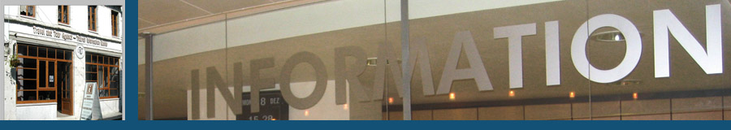

Për informacione mbi Shtëpinë e Zekateve por edhe për kohën apo oraret në të cilën mund ta vizitoni, ju mund të kontaktoni me Zyrën e Informacionit Turistik që është vendosur në Qafën e Pazarit, mu në zemër të pjesës historike të qytetit, në rrugën që të çon për në Kala. Aty gjeni informacion falas për:
- Atraksionet të tjera turistike të Gjirokastrës dhe rajonit
- Hotelet
- Restorantet
- Evenimentet dhe dëfrimet turistike
Gjithashtu, aty mund të gjeni harta, guida dhe publikime të tjera që ju ndihmojnë të shijoni vizitën tuaj dhe të kuptoni më mirë Gjirokastrën, qytetin e Trashëgimisë Botërore të UNESCO-s.
Orari:
9.00 deri 17.00 , shtatë ditë në javë nga 1 marsi deri më 30 nëntor,dhe
9:00 deri 15.00 , shtatë ditë në javë nga 1 dhjetori deri më 28 shkurt.
Zyra e Informimit Turistik është nismë e Organizatës për Ruajtjen dhe Zhvillimin e Gjirokastrës (mbështetur nga Packard Humanities Institute) në bashkëpunim me agjencinë “Old Bazar Travel and Tour Agency”.
Për më shumë informacion drejtohuni me e-mail në tic@gjirokastra.org ose telefononi në numrin +355 842 67077.

